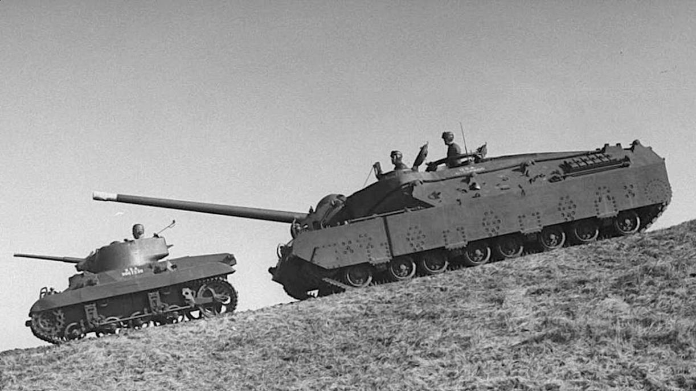
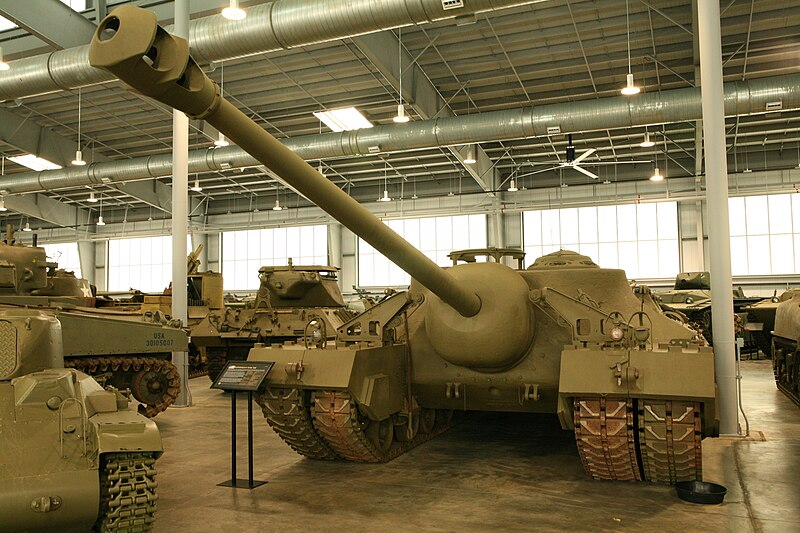

This was one of the few American tanks that were constructed during WW2 that never saw any battles. It's purpose was to be used in the eastern front against the German Forces in trying to destory bunkers. During the development stages of the tank, the Allied Forces had won in the eastern front causing this tank to never be used in battle. It was supposed to be used later on during the conflcits with Japan, but they had surrended before it was put to use.
This tank has some distint features that set it apart from other American tanks that were produced during that time period. One of the features were the tracks on the tank. Unlike most tanks and even modern ones today, the T-28 has a dual track. This could be useful when going through tough terrain.
Below are some webites where you are able to find more information on the T-28 tank.